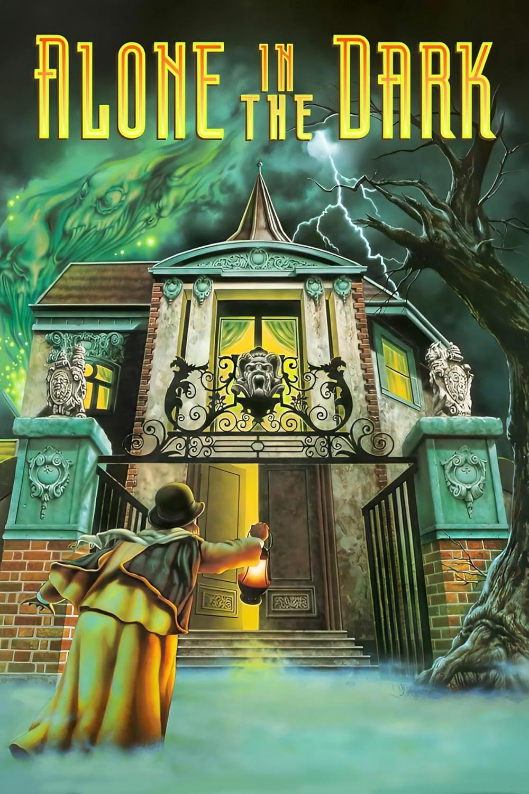
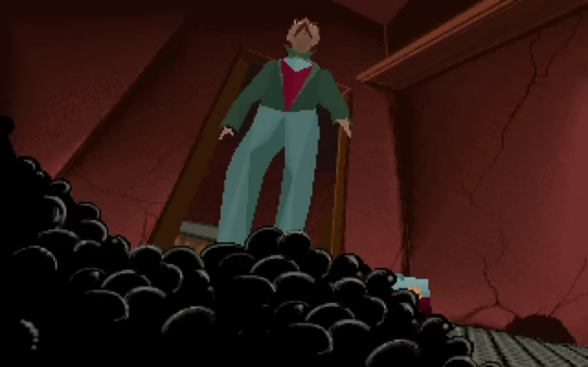

Showcasing some of the best, most fun and most influential polygonal video games.
The 1990s saw the birth of true 3D gaming on PC, with groundbreaking titles pushing hardware to its limits. From the rise of first-person shooters like Quake to early 3D RPGs and immersive simulations, this was a decade of rapid evolution.
Polygonal graphics, hardware acceleration, and online multiplayer began to reshape gaming forever. Step into an era where innovation knew no bounds.
Infogames - 1992
Alone in the Dark is a pioneering survival horror game that laid the foundation for the genre, blending eerie atmosphere, fixed cinematic camera angles, and puzzle-solving within a haunted mansion. Players control either Edward Carnby, a private investigator, or Emily Hartwood, who is searching for answers about her uncle’s mysterious death.
As they explore the sinister Derceto Manor, they uncover dark Lovecraftian horrors, battle grotesque creatures, and piece together the mansion’s occult secrets. With its tense exploration, limited resources, and polygonal 3D character models over pre-rendered backgrounds, Alone in the Dark set the stage for future horror classics like Resident Evil and remains a landmark in gaming history.